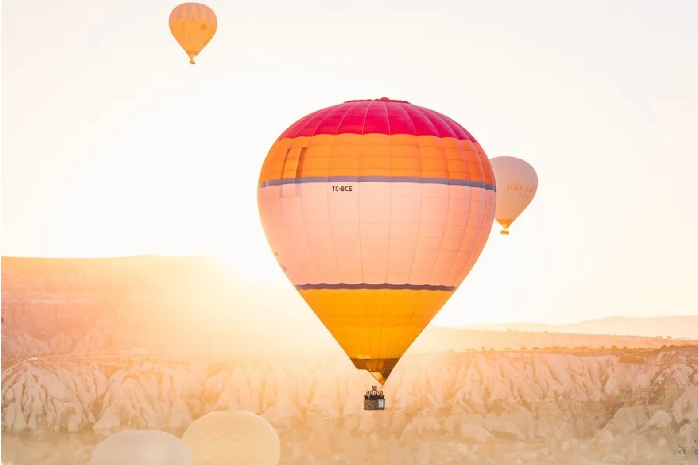

Hot Air Ballooning
For those with an eye for natural beauty, a balloon tour is an essential part of any visit. From the moment of takeoff, around sunrise, the spectacular landscape of Cappadocia enchants the passenger. You will feel as if you are in a dream, drifting gently past fairy chimneys, through valleys scattered with pigeon houses and over orchards and vineyards. The diverse colors and vistas of the flight will make for beautiful photographs and unforgettable memories.